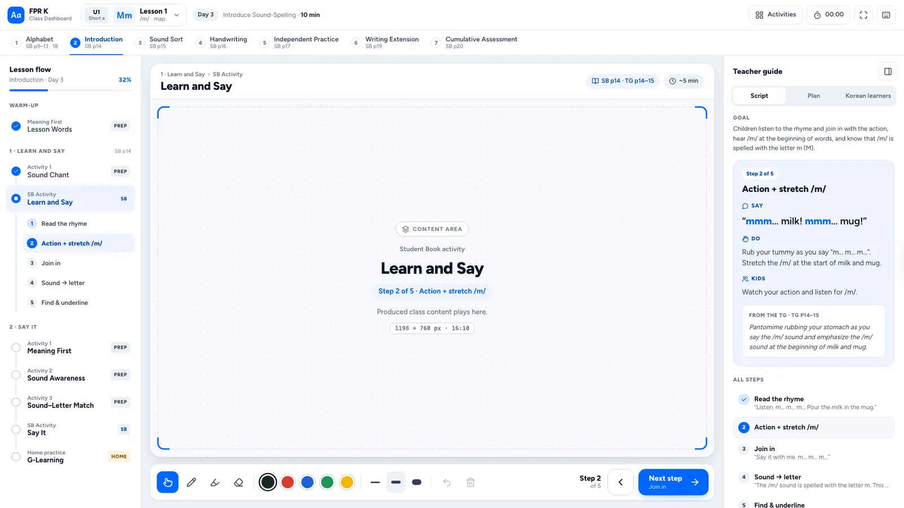
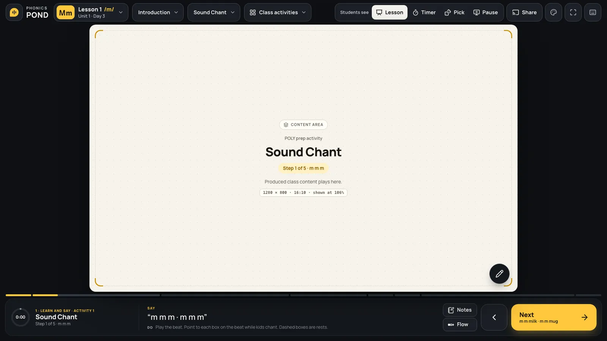
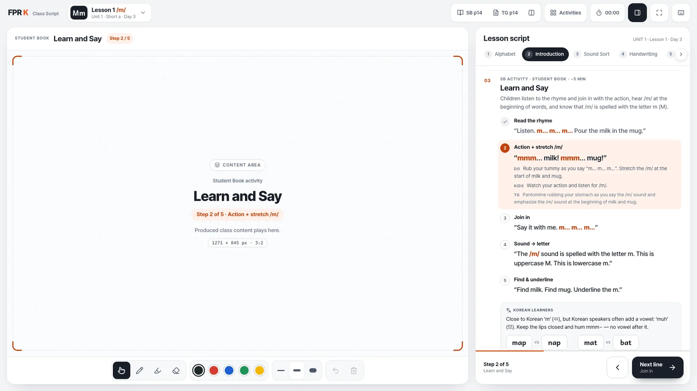

OpenA
Guide
Everything in view.
왼쪽 수업 흐름 · 가운데 칠판 · 오른쪽 강사 가이드의 3단 구성입니다. 지금 할 말(Say)과 할 일(Do)이 언제나 옆에 보여 처음 가르치는 강사도 길을 잃지 않습니다.
- 단계마다 Say · Do · Kids 스크립트와 TG 원문 인용
- 가이드 3탭: Script · Plan · Korean learners
- G 키로 가이드를 접어 칠판을 넓게
외국인 강사가 교실 전자칠판에서 쓰는 수업 진행 화면입니다. v18 프로토타입의 메뉴와 수업 흐름(Lesson → Section → Activity → Step)은 그대로 쓰고 화면 틀만 새로 설계했습니다. 콘텐츠 영역은 비워 둔 슬롯으로, 제작 콘텐츠가 들어갈 자리의 실제 크기(px)를 실시간으로 보여 줍니다.
썸네일을 누르면 시안이 열리고, 작은 화면은 크게 볼 수 있습니다.

OpenEverything in view.
왼쪽 수업 흐름 · 가운데 칠판 · 오른쪽 강사 가이드의 3단 구성입니다. 지금 할 말(Say)과 할 일(Do)이 언제나 옆에 보여 처음 가르치는 강사도 길을 잃지 않습니다.

디벨롭 중OpenThe board is the room.
학생 화면은 학원 콘텐츠 규격인 1280 × 800(16:10)으로 고정하고, 대시보드에서는 양옆 여백을 두고 비율 그대로 보여 줍니다. 진행 버튼과 지금 할 말은 손이 닿는 독에 모았고, 컨트롤 위치 · 노트 방식 · 컬러는 강사가 고릅니다.

OpenTeach from the script.
오른쪽 스크립트가 곧 내비게이션입니다. 대본을 읽듯 한 줄씩 넘기면 칠판이 따라옵니다. TG 문장을 충실히 따르는 수업에 맞춘 구성입니다.
콘텐츠 영역 크기는 1920 × 1080 화면 기준 실측값입니다.
| AGuide | BStage | CScript | |
|---|---|---|---|
| 레이아웃 | 3단 — 흐름 · 칠판 · 가이드 | 16:10 학생 화면 + 독 (하단 · 왼쪽 · 오른쪽 선택) | 2단 — 칠판 · 스크립트 |
| 진행 방식 | 왼쪽 흐름 목록 · 하단 Next step | 하단 Next · 진행 세그먼트 · 리모컨 | 스크립트 줄 선택 · Next line |
| 강사 가이드 | 항상 표시 (접기 가능) | 노트 팝업 또는 사이드 패널 | 스크립트 자체가 가이드 |
| 레슨 이동 | 상단 팝오버 (6유닛 × 5레슨) | 전체 화면 레슨맵 + 섹션 미리보기 | 목차(Contents) 팝오버 |
| 콘텐츠 영역 | 1198 × 760 → 1582 × 760 | 1280 × 800 고정 → 1357 × 848 | 1271 × 845 → 1891 × 845 |
| 톤 | 라이트 · POLY Blue | 다크 · 민트 · 옐로 (테마 3종) | 쿨 그레이 · 번트 오렌지 |
| 잘 맞는 상황 | 처음 이 교재를 가르칠 때 | 진행이 익숙하고 몰입이 중요할 때 | TG 대본을 그대로 따를 때 |
같은 엔진(fprk-core.js) 위에 화면 틀만 다릅니다.